가스기사 (2021-03-07 기출문제)
1과목: 가스유체역학
1. 2kgf은 몇 N 인가?
- 2
- 4.9
- 9.8
- 19.6
(정답률: 77%)

2. 2차원 직각좌표계(x, y)상에서 속도 포텐셜(ø, velocity potential)이 ø = Ux로 주어지는 유동장이 있다. 이 유동장의 흐름함수(ψ, stream function)에 대한 표현식으로 옳은 것은? (단, U는 상수이다.)
- U(x+y)
- U(-x+y)
- Uy
- 2Ux
(정답률: 68%)
3. 펌프작용이 단속적이라서 맥동이 일어나기 쉬우므로 이를 완화하기 위하여 공기실을 필요로 하는 펌프는?
- 원심펌프
- 기어펌프
- 수격펌프
- 왕복펌프
(정답률: 69%)
4. 매끄러운 원관에서 유량 Q, 관의 길이 L, 직경 D, 동점성계수 ν가 주어졌을 때 손실수두 hf를 구하는 순서로 옳은 것은? (단, f는 마찰계수, Re는 Reynolds 수, V는 속도이다.)
- Moody 선도에서 f를 가정한 후 Re를 계산하고 hf를 구한다.
- hf를 가정하고 f를 구해 확인한 후 Moody 선도에서 Re로 검증한다.
- Re를 계산하고 Moody 선도에서 f를 구한 후 hf를 구한다.
- Re를 가정하고 V를 계산하고 Moody 선도에서 f를 구한 후 hf를 계산한다.
(정답률: 66%)
5. 내경이 300mm, 길이가 300m인 관을 통하여 평균유속 3m/s 로 흐를 때 압력손실수두는 몇 m 인가? (단, Darcy-Weisbach 식에서의 관마찰계수는 0.03이다.)
- 12.6
- 13.8
- 14.9
- 15.6
(정답률: 57%)
6. 압력이 0.1MPa, 온도 20℃에서 공기의 밀도는 몇 kg/m3 인가? (단, 공기의 기체상수는 287 J/kg·K 이다.)
- 1.189
- 1.314
- 0.1288
- 0.6756
(정답률: 47%)
7. 동점도의 단위로 옳은 것은?
- m/s2
- m/s
- m2/s
- m2/kg·s2
(정답률: 68%)
8. 공기를 이상기체로 가정하였을 때 25℃에서 공기의 음속은 몇 m/s 인가? (단, 비열비 k = 1.4, 기체상수 R = 29.27 kgf·m/kg·K 이다.)
- 342
- 346
- 425
- 456
(정답률: 57%)
9. 지름 8cm인 원관 속을 동점성계수가 1.5×10-6 m2/s 인 물이 0.002 m3/s 의 유량을 흐르고 있다. 이 때 레이놀즈수는 약 얼마인가?
- 20000
- 21221
- 21731
- 22333
(정답률: 61%)
10. 20℃ 1.03kgf/cm2abs 의 공기가 단열가역 압축되어 50%의 체적 감소가 생겼다. 압축 후의 온도는? (단, 기체상수 R은 29.27 kgf·m/kg·K 이며 CP/CV = 1.4 이다.)
- 42℃
- 68℃
- 83℃
- 114℃
(정답률: 33%)
11. 마찰계수와 마찰저항에 대한 설명을 옳지 않은 것은?
- 관 마찰계수는 레이놀즈수와 상대조도의 함수로 나타낸다.
- 평판상의 층류흐름에서 점성에 의한 마찰계수는 레이놀즈수의 제곱근에 비례한다.
- 원관에서의 층류운동에서 마찰 저항은 유체의 점성계수에 비례한다.
- 원관에서의 완전 난류운동에서 마찰저항은 평균유속의 제곱에 비례한다.
(정답률: 51%)
12. 그림과 같이 윗변과 아랫변이 각각 a, b이고 높이가 H인 사다리꼴형 평면 수문인 수로에 수직으로 설치되어 있다. 비중량 γ인 물의 압력에 의해 수문이 받는 전체 힘은?
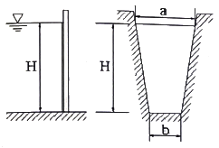
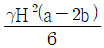
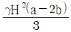
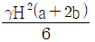
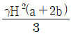
(정답률: 55%)
13. 내경이 10cm인 원관 속을 비중 0.85인 액체가 10cm/s의 속도로 흐른다. 액체의 점도가 5cP라면 이 유동의 레이놀즈수는?
- 1400
- 1700
- 2100
- 2300
(정답률: 53%)
14. 압축성 유체의 1차언 유동에서 수직충격파 구간을 지나는 기체 성질의 변화로 옳은 것은?
- 속도, 압력, 밀도가 증가한다.
- 속도, 온도, 밀도가 증가한다.
- 압력, 밀도, 온도가 증가한다.
- 압력, 밀도, 운동량 플럭스가 증가한다.
(정답률: 68%)
15. 대기의 온도가 일정하다고 가정할 때 공중에 높이 떠 있는 고무풍선이 차지하는 부피(a)와 그 풍선이 땅에 내렸을 때의 부피(b)를 옳게 비교한 것은?
- a 는 b 보다 크다.
- a 와 b 는 같다.
- a 는 b 보다 작다.
- 비교할 수 없다.
(정답률: 72%)
16. 안지름 20cm의 원관 속을 비중이 0.83인 유체가 층류(Laminar flow)로 흐를 때 관중심에서의 유속이 48cm/s 이라면 관벽에서 7cm 떨어진 지점에서의 유체의 속도는(cm/s)는?
- 25.52
- 34.68
- 43.68
- 46.92
(정답률: 44%)
17. 베르누이 방정식에 관한 일반적인 설명으로 옳은 것은?
- 같은 유선상이 아니더라도 언제나 임의의 점에 대하여 적용된다.
- 주로 비정상류 상태의 흐름에 대하여 적용된다.
- 유체의 마찰 효과를 고려한 식이다.
- 압력수두, 속도수두, 위치수두의 합은 유선을 따라 일정하다.
(정답률: 68%)
18. 다음 중 원심 송풍기가 아닌 것은?
- 프로펠러 송풍기
- 다익 송풍기
- 레이디얼 송풍기
- 익형(airfoil) 송풍기
(정답률: 59%)
19. 일반적으로 원관 내부 유동에서 층류만이 일어날 수 있는 레이놀즈수(Reynolds number)의 영역은?
- 2100 이상
- 2100 이하
- 21000 이상
- 21000 이하
(정답률: 70%)
20. 수평 원관 내에서의 유체흐름을 설명하는 Hagen-Poiseuille 식을 얻기 위해 필요한 가정이 아닌 것은?
- 완전히 발달된 흐름
- 정상상태 흐름
- 층류
- 포텐셜 흐름
(정답률: 66%)
2과목: 연소공학
21. 연료의 일반적인 연소형태가 아닌 것은?
- 예혼합연소
- 확산연소
- 잠열연소
- 증발연소
(정답률: 68%)
22. 연소에서 공기비가 적을 때의 현상이 아닌 것은?
- 매연의 발생이 심해진다.
- 미연소에 의한 열손실이 증가한다.
- 배출가스 중의 NO2의 발생이 증가한다.
- 미연소 가스에 의한 역화의 위험성이 증가한다.
(정답률: 59%)
23. 이상기체 10kg을 240K 만큼 온도를 상승시키는데 필요한 열량이 정압인 경우와 정적인 경우에 그 차가 415kJ 이었다. 이 기체의 가스상수는 약 몇 kJ/kg·K 인가?
- 0.173
- 0.287
- 0.381
- 0.423
(정답률: 44%)
24. 다음과 같은 조성을 갖는 혼합가스의 분자량은? (단, 혼합가스의 체적비는 CO2(13.1%), O2(7.7%), N2(79.2%) 이다.)
- 27.81
- 28.94
- 29.67
- 30.41
(정답률: 55%)
25. 다음은 Air-standard otto cycle의 P-V diagram이다. 이 cycle의 효율(η)을 옳게 나타낸 것은? (단, 정젹열용량은 일정하다.)
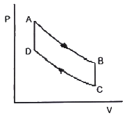
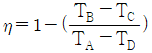
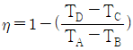
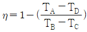
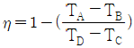
(정답률: 61%)
26. 가스 폭발의 용어 중 DID의 정의에 대하여 가장 올바르게 나타낸 것은?
- 격렬한 폭발이 완만한 연소로 넘어갈 때까지의 시간
- 어느 온도에서 가열하기 시작하여 발화에 이르기까지의 시간
- 폭발 등급을 나타내는 것으로서 가연성 물질의 위험성의 척도
- 최초의 완만한 연소로부터 격렬한 폭굉으로 발전할 때까지의 거리
(정답률: 70%)
27. 1kWh의 열당량은?
- 860 kcal
- 632 kcal
- 427 kcal
- 376 kcal
(정답률: 65%)
28. 위험장소 분류 중 상용의 상태에서 가연성가스가 체류해 위험하게 될 우려가 있는 장소, 정비·보수 또는 누출 등으로 인하여 종종 가연성가스가 체류하여 위함하게 될 우려가 있는 장소는?
- 제0종 위험장소
- 제1종 위험장소
- 제2종 위험장소
- 제3종 위험장소
(정답률: 60%)
29. 공기와 연료의 혼합기체의 표시에 대한 설명 중 옳은 것은?
- 공기비(excess air ratio)는 연공비의 역수와 같다.
- 당량비(equivalence ratio)는 실제의 연공비와 이론 연공비의 비로 정의된다.
- 연공비(fuel air ratio)라 함은 가연 혼합기 중의 공기와 연료의 질량비로 정의된다.
- 공연비(air fuel ratio)라 함은 가연 혼합기 중의 연료와 공기의 질량비로 정의된다.
(정답률: 56%)
30. 메탄가스 1Nm3를 완전 연소시키는데 필요한 이론공기량은 약 몇 Nm3인가?
- 2.0Nm3
- 4.0Nm3
- 4.76Nm3
- 9.5Nm3
(정답률: 52%)
31. 전실 화재(Flash Over)의 방지대책으로 가장 거리가 먼 것은?
- 천장의 불연화
- 폭발력의 억제
- 가연물량의 제한
- 화원의 억제
(정답률: 51%)
32. 이상기체의 구비조건이 아닌 것은?
- 내부에너지는 온도와 무관하여 체적에 의해서만 결정된다.
- 아보가드로의 법칙을 따른다.
- 분자의 충돌은 완전탄성체로 이루어진다.
- 비열비는 온도에 관계없이 일정하다.
(정답률: 66%)
33. 상온, 상압하에서 가연성가스의 폭발에 대한 일반적인 설명 중 틀린 것은?
- 폭발범위가 클수록 위험하다.
- 인화점이 높을수록 위험하다.
- 연소속도가 클수록 위험하다.
- 착화점이 높을수록 안전하다.
(정답률: 67%)
34. 옥탄(g)의 연소 엔탈피는 반응물 중의 수증기가 응축되어 물이 되었을 때 25℃에서 –48220 kJ/kg 이다. 이 상태에서 옥탄(g)의 저위발열량은 약 몇 kJ/kg 인가? (단, 25℃ 물의 증발엔탈피[hfg]는 2441.8 kJ/kg 이다.)
- 40750
- 42320
- 44750
- 45778
(정답률: 30%)
35. 다음 중 연소의 3요소를 옳게 나열한 것은?
- 가연물, 빛, 열
- 가연물, 공기, 산소
- 가연물, 산소, 점화원
- 가연물, 질소, 단열압축
(정답률: 75%)
36. 열역학 및 연소에서 사용되는 상수와 그 값이 틀린 것은?
- 열의 일상당량 : 4186 J/kcal
- 일반 기체상수 : 8314 J/kmol·K
- 공기의 기체상수 : 287 J/kg·K
- 0℃에서의 물의 증발잠열 : 539 kJ/kg
(정답률: 52%)
37. 분자량이 30인 어떤 가스의 정압비열이 0.516 kJ/kg·K 이라고 가정할 때 이 가스의 비열비 k는 약 얼마인가?
- 1.0
- 1.4
- 1.8
- 2.2
(정답률: 44%)
38. 다음 확산호염의 여러 가지 형태 중 대향분류(對向噴流) 확산화염에 해당하는 것은?
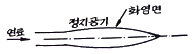
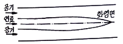
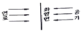
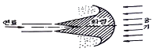
(정답률: 69%)
39. 다음 반응 중 폭굉(detonation) 속도가 가장 빠른 것은?
- 2H2 + O2
- CH4 + 2O2
- C3H8 + 3O2
- C38 + 6O2
(정답률: 63%)
40. 액체 프로판이 298K, 0.1MPa에서 이론공기를 이용하여 연소하고 있을 때 고발열량은 약 몇 MJ/kg인가? (단, 연료의 증발엔탈피는 370 kJ/kg이고, 기체상태의 생성엔탈피는 각각 C3H8 -103909 kJ/kmol, CO2 -393757 kJ/kmol 액체 및 기체상태 H2O는 각각 –286010 kJ/kmol, -241971 kJ/kmol 이다.)
- 44
- 46
- 50
- 22⑤
(정답률: 36%)
3과목: 가스설비
41. 다음 그림에서 보여주는 관이음재의 명칭은?
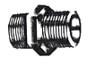
- 소켓
- 니플
- 부싱
- 캡
(정답률: 68%)
42. 결정 조직이 거칠은 것을 미세화하여 조직을 균일하게 하고 조직의 변형을 제거하기 위하여 균일하게 가열한 후 공기 중에서 냉각하는 열처리 방법은?
- 퀀칭
- 노말라이징
- 어닐링
- 템퍼링
(정답률: 57%)
43. 고압가스 제조 장치의 재료에 대한 설명으로 틀린 것은?
- 상온, 건조 상태의 염소가스에는 보통강을 사용한다.
- 암모니아, 아세틸렌의 배관 재료에는 구리를 사용한다.
- 저온에서 사용되는 비철금속 재료는 동, 니켈 강을 사용한다.
- 암모니아 합성탑 내부의 재료에는 18-8 스테인리스강을 사용한다.
(정답률: 62%)
44. 가스 액화분리장치의 구성기기 중 왕복동식 팽창기의 특징에 대한 설명으로 틀린 것은?
- 고압식 액체산소분리장치, 수소액화장치, 헬륨액화기 등에 사용된다.
- 흡입압력은 저압에서 고압(20MPa)까지 범위가 넓다.
- 팽창기의 효율은 85~90%로 높다.
- 처리 가스량이 1000m3/h 이상의 대량이면 다기통이 된다.
(정답률: 45%)
45. 자동정체식 조정기를 사용할 때의 장점에 해당하지 않는 것은?
- 잔류액이 거의 없어질 때까지 가스를 소비할 수 있다.
- 전체 용기의 개수가 수동절체식보다 적게 소요된다.
- 용기교환 주기를 길게 할 수 있다.
- 일체형을 사용하면 다단 감압식보다 배관의 압력손실을 크게 해도 된다.
(정답률: 56%)
46. 피스톤 행정용량 0.00248 m3, 회전수 175rpm의 압축기로 1시간에 토출구로 92kg/h의 가스가 통과하고 있을 때 가스의 토출효율은 약 몇 % 인가? (단, 토출가스 1kg을 흡입한 상태로 환산한 체적은 0.189 m3 이다.)
- 66.8
- 70.2
- 76.8
- 82.2
(정답률: 28%)
47. 도시가스사업법에서 정의한 가스를 제조하여 배관을 통하여 공급하는 도시가스가 아닌 것은?
- 석유가스
- 나프타부생가스
- 석탄가스
- 바이오가스
(정답률: 52%)
48. 수소화염 또는 산소·아세틸렌 화염을 사용하는 시설 중 분기되는 각각의 배관에 반드시 설치해야 하는 장치는?
- 역류방지장치
- 역화방지장치
- 긴급이송장치
- 긴급차다장치
(정답률: 64%)
49. 가스 액화 사이클의 종류가 아닌 것은?
- 클라우드식
- 필립스식
- 크라시우스식
- 린데식
(정답률: 54%)
50. 왕복식 압축기의 연속적인 용량제어 방법으로 가장 거리가 먼 것은?
- 바이패스 밸브에 의한 조정
- 회전수를 변경하는 방법
- 흡입 주밸브를 폐쇄하는 방법
- 베인 컨트롤에 의한 방법
(정답률: 51%)
51. 적화식 버너의 특징으로 틀린 것은?
- 불완전연소가 되기 쉽다.
- 고온을 얻기 힘들다.
- 넓은 연소실이 필요하다.
- 1차 공기를 취할 때 역화 우려가 있다.
(정답률: 35%)
52. 도시가스 배관에서 가스 공급이 불량하게 되는 원인으로 가장 거리가 먼 것은?
- 배관의 파손
- Terminal Box의 불량
- 정압기의 고장 또는 능력부족
- 배관 내의 물의 고임, 녹으로 인한 폐쇄
(정답률: 68%)
53. 고압가스의 분출 시 정전기가 가장 발생하기 쉬운 경우는?
- 다성분의 혼합가스인 경우
- 가스의 분자량이 작은 경우
- 가스가 건조해 있을 경우
- 가스 중에 액체나 고체의 미립자가 섞여있는 경우
(정답률: 53%)
54. 1호당 1일 평균 가스 소비량이 1.44 kg/day 이고 소비자 호수가 50호 라면 피크시의 평균가스 소비량은? (단, 피크 시의 평균 가스 소비율은 17% 이다.)
- 10.18 kg/h
- 12.24 kg/h
- 13.42 kg/h
- 14.36 kg/h
(정답률: 55%)
55. 전기방식법 중 외부전원법의 특징이 아닌 것은?
- 전압, 전류의 조정이 용이하다.
- 전식에 대해서도 방식이 가능하다.
- 효과범위가 넓다.
- 다른 매설 금속체의 장해가 없다.
(정답률: 57%)
56. 고압가스 탱크의 수리를 위하여 내부가스를 배출하고 불활성가스로 치환하여 다시 공기로 치환하였다. 내부의 가스를 분석한 결과 탱크 안에서 용접작업을 해도 되는 경우는?
- 산소 20%
- 질소 85%
- 수소 5%
- 일산화탄소 4000ppm
(정답률: 66%)
57. 성능계수가 3.2인 냉동기가 10ton의 냉동을 위하여 공급하여야 할 동력은 약 몇 kW 인가?
- 8
- 12
- 16
- 20
(정답률: 38%)
58. LPG를 이용한 가스 공급방식이 아닌 것은?
- 변성혼입방식
- 공기혼합방식
- 직접혼입방식
- 가압혼입방식
(정답률: 38%)
59. 가스의 연소기구가 아닌 것은?
- 피셔식 버너
- 적화식 버너
- 분젠식 버너
- 전1차공기식 버너
(정답률: 52%)
60. 용기내장형 액화석유가스 난방기용 용접용기에서 최고 충전압력이란 몇 MPa를 말하는가?
- 1.25 MPa
- 1.5 MPa
- 2 MPa
- 2.6 MPa
(정답률: 43%)
4과목: 가스안전관리
61. 고압가스 충전용기를 차량에 적재 운반할 때의 기준으로 틀린 것은?
- 충돌을 예방하기 위하여 고무링을 씌운다.
- 모든 충전용기는 적재함에 넣어 세워서 적재한다.
- 충격을 방지하기 위하여 완충판 등을 갖추고 사용한다.
- 독성가스 중 가연성가스와 조연성가스는 동일 차량 적재함에 운반하지 않는다.
(정답률: 54%)
62. 아세틸렌을 용기에 충전할 때에는 미리 용기에 다공질물을 고루 채워야 하는데, 이 때 다공질물의 다공도 상한 값은?
- 72% 미만
- 85% 미만
- 92% 미만
- 98% 미만
(정답률: 59%)
63. 액화산소 저장탱크 저장능력이 2000m3일 때 방류둑의 용량은 얼마 이상으로 하여야 하는가?
- 1200m3
- 1800m3
- 2000m3
- 2200m3
(정답률: 41%)
64. 초저온 용기의 신규 검사 시 다른 용접용기 검사 항목과 달리 특별히 시험하여야 하는 검사 항목은?
- 압궤시험
- 인장시험
- 굽힘시험
- 단열성능시험
(정답률: 52%)
65. 압력을 가하거나 온도를 낮추면 가장 쉽게 액화하는 가스는?
- 산소
- 천연가스
- 질소
- 프로판
(정답률: 62%)
66. 액화석유가스용 소형저장탱크의 설치장소의 기준으로 틀린 것은?
- 지상설치식으로 한다.
- 액화석유가스가 누출한 경우 체류하지 않도록 통풍이 좋은 장소에 설치한다.
- 전용탱크실로 하여 옥외에 설치한다.
- 건축물이나 사람이 통행하는 구조물의 하부에 설치하지 아니한다.
(정답률: 49%)
67. 염소와 동일 차량에 적재하여 운반하여도 무방한 것은?
- 산소
- 아세틸렌
- 암모니아
- 수소
(정답률: 60%)
68. 폭발 상한값은 수소 폭발 하한값은 암모니아와 가장 유사한 가스는?
- 에탄
- 일산화탄소
- 산화프로필렌
- 메틸아민
(정답률: 49%)
69. 도시가스사업법에서 요구하는 전문교육 대상자가 아닌 것은?
- 도시가스사업자의 안전관리책임자
- 특정가스사용시설의 안전관리책임자
- 도시가스사업자의 안전점검원
- 도시가스사업자의 사용시설점검원
(정답률: 47%)
70. 독성가스 배관용 밸브 제조의 기준 중 고압가스안전관리법의 적용대상 밸브종류가 아닌 것은?
- 니들밸브
- 게이트밸브
- 체크밸브
- 볼밸브
(정답률: 49%)
71. 용기에 의한 액화석유가스저장소에서 액화석유가스의 충전용기 보관실에 설치하는 환기구의 통풍가능 면적의 합계는 바닥면적 1m2마다 몇 cm2 이상이어야 하는가?
- 250cm2
- 300cm2
- 400cm2
- 650cm2
(정답률: 50%)
72. 저장탱크에 가스를 충전할 때 저장탱크 내용적의 90%를 넘지 않도록 충전해야 하는 이유는?
- 액의 요동을 방지하기 위하여
- 충격을 흡수하기 위하여
- 온도에 따른 액 팽창이 현저히 커지므로 안전공간을 유지하기 위하여
- 추가로 충전할 때를 대비하기 위하여
(정답률: 69%)
73. 독성가스를 차량으로 운반할 때에는 보호장비를 비치하여야 한다. 압축가스의 용적이 몇 m3 이상일 때 공기호흡기를 갖추어야 하는가?
- 50m3
- 100m3
- 500m3
- 1000m3
(정답률: 39%)
74. 가스안전 위험성 평가기법 중 정량적 평가에 해당되는 것은?
- 체크리스트기법
- 위험과 운전분석기법
- 작업자실수 분석기법
- 사고예상질문 분석기법
(정답률: 52%)
75. 고압가스 특정제조시설에서 에어졸 제조의 기준으로 틀린 것은?
- 에어졸 제조는 그 성분 배합비 및 1일에 제조하는 최대수량을 정하고 이를 준수한다.
- 금속제의 용기는 그 두께가 0.125mm 이상이고 내용물로 인한 부식을 방지할 수 있는 조치를 한다.
- 용기는 40℃에서 용기 안의 가스압력의 1.2배의 압력을 가할 때 파열되지 않는 것으로 한다.
- 내용적이 100cm3을 초과하는 용기는 그 용기의 제조자의 명칭 또는 기호가 표시되어 있는 것으로 한다.
(정답률: 42%)
76. 일반도시가스공급시설에 설치된 압력조정기는 매 6개월에 1회 이상 안전점검을 실시한다. 압력조정기의 점검기준으로 틀린 것은?
- 입구압력을 측정하고 입구압력이 명판에 표시된 입구압력 범위 이내인지 여부
- 격납상자 내부에 설치된 압력조정기는 격납상자의 견고한 고정 여부
- 조정기의 몸체와 연결부의 가스누출 유무
- 필터 또는 스트레이너의 청소 및 손상 유무
(정답률: 36%)
77. 용기에 의한 액화석유가스 저장소의 저장설비 설치기준으로 틀린 것은?
- 용기보관실 설치 시 저장설비는 용기집합식으로 하지 아니한다.
- 용기보관실은 사무실과 구분하여 동일한 부지에 설치한다.
- 실외저장소 설치 시 충전용기와 잔가스 용기의 보관장소는 1.5m 이상의 거리를 두어 구분하여 보관한다.
- 실외저장소 설치 시 바닥으로부터 2m 이내의 배수시설이 있을 경우에는 방수재료로 이중으로 덮는다.
(정답률: 30%)
78. 불화수소(HF) 가스를 물에 흡수시킨 물질을 저장하는 용기로 사용하기에 가장 부적절한 것은?
- 납용기
- 유리용기
- 강용기
- 스테인리스용기
(정답률: 62%)
79. 고압가스용 용접용기의 반타원체형 경판의 두께 계산식은 다음과 같다. m을 올바르게 설명한 것은?
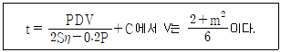
- 동체의 내경과 외경비
- 강판 중앙단곡부의 내경과 경판둘레의 단곡부 내경비
- 반타원체형 내면의 장축부와 단축부의 길이의 비
- 경판 내경과 경판 장축부의 길이의 비
(정답률: 44%)
80. 일반 용기의 도색이 잘못 연결된 것은?
- 액화염소 - 갈색
- 아세틸렌 - 황색
- 액화탄산가스 - 회색
- 액화암모니아 – 백색
(정답률: 53%)
5과목: 가스계측기기
81. 다음 중 측온 저항체의 종류가 아닌 것은?
- Hg
- Ni
- Cu
- Pt
(정답률: 53%)
82. 기체크로마토그래피법의 검출기에 대한 설명으로 옳은 것은?
- 불꽃이온화 검출기는 감도가 낮다.
- 전자포획 검출기는 선형 감응범위가 아주 우수하다.
- 열전도도 검출기는 유기 및 무기화학종에 모두 감응하고 용질이 파괴되지 않는다.
- 불꽃광도 검출기는 모든 물질에 적용된다.
(정답률: 38%)
83. 다음 보기에서 설명하는 가스미터는?
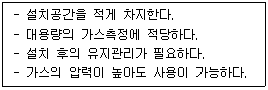
- 막식가스미터
- 루트미터
- 습식가스미터
- 오리피스미터
(정답률: 55%)
84. 내경 70mm의 배관으로 어떤 양의 물을 보냈더니 배관 내 유속이 3m/s이었다. 같은 양의 물을 내경 50mm의 배관으로 보내면 배관 내 유속은 약 몇 m/s가 되는가?
- 2.56
- 3.67
- 4.20
- 5.88
(정답률: 46%)
85. 용량범위가 1.5~200m3/h 일반 수용가에 널리 사용되는 가스미터는?
- 루트미터
- 습식가스미터
- 델터미터
- 막식가스미터
(정답률: 52%)
86. 다음 보기에서 설명하는 열전대 온도계(Thermo electric thermometer)의 종류는?
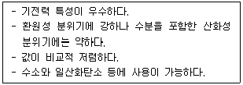
- 백금 – 백금·로듐
- 크로멜 - 알루멜
- 철 - 콘스탄탄
- 구리 – 콘스탄탄
(정답률: 42%)
87. 진동이 일어나는 장치의 진동을 억제하는데 가장 효과적인 제어동작은?
- 뱅뱅동작
- 비례동작
- 적분동작
- 미분동작
(정답률: 45%)
88. 변화되는 목표치를 측정하면서 제어량을 목표치에 맞추는 자동제어 방식이 아닌 것은?
- 추종 제어
- 비율 제어
- 프로그램 제어
- 정치 제어
(정답률: 52%)
89. 스프링식 저울에 물체의 무게가 작용되어 스프링의 변위가 생기고 이에 따라 바늘의 변위가 생겨 물체의 무게를 지시하는 눈금으로 무게를 측정하는 방법을 무엇이라 하는가?
- 영위법
- 치환법
- 편위법
- 보상법
(정답률: 59%)
90. 막식가스미터에서 발생할 수 있는 고장의 형태 중 가스미터에 감도 유량을 흘렸을 때, 미터 지침의 시도(示度)에 변화가 나타나지 않는 고장을 의미하는 것은?
- 감도불량
- 부동
- 불통
- 기차불량
(정답률: 30%)
91. 화학분석법 중 요오드(I)적정법은 주로 어떤 가스를 정량하는데 사용되는가?
- 일산화탄소
- 아황산가스
- 황화수소
- 메탄
(정답률: 38%)
92. 측정치가 일정하지 않고 분포 현상을 일으키는 흩어짐(dispersion)이 원인이 되는 오차는?
- 개인오차
- 환경오차
- 이론오차
- 우연오차
(정답률: 54%)
93. 부르동(Bourdon)관 압력계에 대한 설명으로 틀린 것은?
- 높은 압력은 측정할 수 있지만 정도는 좋지 않다.
- 고압용 부르동관의 재질은 니켈강이 사용된다.
- 탄성을 이용하는 압력계이다.
- 부르동관의 선단은 압력이 상승하면 수축되고, 낮아지면 팽창한다.
(정답률: 40%)
94. 수소의 품질검사에 이용되는 분석방법은?
- 오르자트법
- 산화 연소법
- 인화법
- 파라듐블랙에 의한 흡수법
(정답률: 45%)
95. 상대습도가 30%이고, 압력과 온도가 각각 1.1bar, 75℃인 습공기가 100m3/h로 공정에 유입될 때 물습도(mol H2O/mol Dry Air)는? (단, 75℃에서 포화수증기압은 289mmHg이다.)
- 0.017
- 0.117
- 0.129
- 0.317
(정답률: 31%)
96. 다음 중 액면 측정 방법이 아닌 것은?
- 플로트식
- 압력식
- 정전용량식
- 박막식
(정답률: 40%)
97. 다음 가스분석 방법 중 성질이 다른 하나는?
- 자동화학식
- 열전도율법
- 밀도법
- 기체크로마토그래피법
(정답률: 45%)
98. 제백(seebeck)효과의 원리를 이용한 온도계는?
- 열전대 온도계
- 서미스터 온도계
- 팽창식 온도계
- 광전관 온도계
(정답률: 61%)
99. 머무른 시간 407초, 길이 12.2m인 컬럼에서의 띠너비를 바닥에서 측정하였을 때 13초이었다. 이 때 단높이는 몇 mm인가?
- 0.58
- 0.68
- 0.78
- 0.88
(정답률: 27%)
100. 헴펠식 가스분석법에서 흡수·분리되지 않는 성분은?
- 이산화탄소
- 수소
- 중탄화수소
- 산소
(정답률: 50%)